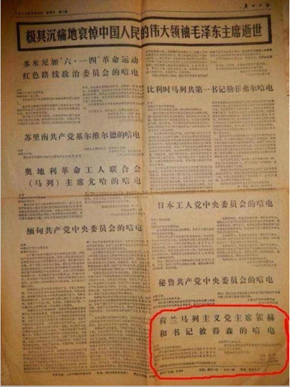

|
回目录 回主页 |
“荷兰马列主义党总书记彼得森”文革中，来自全球各地的共产党在拜谒中国领袖的同时，几乎都能收到为数不等的“革命支票”。比如切-格瓦拉就拿走六千万美金。此情此景激发了美国中情局的奇思妙想，他们通过荷兰情报机关，选中了一个到过中国的名为彼德·贝维的数学老师，执行“红色鲱鱼”计划，以此刺探中国的情报。彼德·贝维化名为彼得尔森，在荷兰成立了“荷兰马克思列宁主义党”，自任总书记。这个只有几个群众演员的政党仅仅依靠一堆虚构的党员花名册，就轻而易举的骗过了中国驻荷兰大使馆（1972年之前应该是代办处——引者注），迅速成为“中国人民的老朋友”。作为发达的资本主义国家的共运代表，在中方的邀请下，彼得尔森自1970年开始，前后25次访问中国，先后得到了毛泽东、周恩来等人的接见。通过和领袖们的接触，彼得尔森不费吹灰之力就了解了中共高层诸多的高层内幕和人事变动，为中情局提供了极为难得的一线情报。当然，必不可少的，是每次彼得尔森访问中国都能带回中方给予的“革命经费”。这样的资助直到八十年代末苏东剧变后才终止，此时彼得尔森已经从中国拿走超过一百万英镑。这些钱，除了出版专门用于糊弄中国驻荷兰大使馆的荷兰版《共产党人》，绝大部分都成了荷兰情报机关的额外补贴。 彼德·贝维晚年对在中国的国宾待遇还是念念不忘，他说，“中国有非常不错的厨师”。他的虚假政党终结后，又成了一个专门为荷兰退休者利益代言的政党主席。这个党成员同样不多。但彼德·贝维说：“这回每个党员都是真的。” 呵呵！想起来了，文革时期，许许多多国家的“马列主义政党”来访，对他们的称呼一般是“某某国共产党（马列）”，这些党的头面人物一般都得到“我党”领导人的接见，有些甚至上天安门，获得“世界革命领袖”毛泽东的亲炙。每当“我党”有什么喜丧事，报纸上又是一大批世界各国“马列主义政党”发来的贺电或者唁电。实在有“我们的朋友遍天下”又或者“吾道不孤”的感觉。 妙极了，我的“文革”收藏物里，就有一张1976年9月15日的《广州日报》，里面就有各国“马列主义政党”发来哀悼毛泽东的唁电。哈哈！真的就有“荷兰马列主义党”的唁电，党的书记正是这位彼得森。

呜呼！当年我们中国人鸠形鹄面，勒紧裤腰带“支援世界革命”，原来钱银就落在这些“滚钱滚粮票”（粤语中的俗语，意即骗钱骗粮票）之徒的手里。 附录： 外国特务扮左翼骗四人帮30万美元 计划代号“愚型儿” 有了中国的资金支持，皮特·博维得以广泛的旅行在欧洲以及欧洲以外的地方结交朋友。“中国人总是用美元支付”，他说。 核心提示：有了中国的资金支持，皮特·博维得以广泛的旅行在欧洲以及欧洲以外的地方结交朋友。“中国人总是用美元支付”，他说。 凤凰历史综合自英国《独立报》、荷兰媒体及《人民日报》资料报道 皮特·博维今天只能拄着拐杖行走，以至于他呼吁应该在火车站安装自动扶梯。恐怕谁也想不到，他曾经是个呼风唤雨的人物，在北京和莫斯科会见过共产主义世界领导人。 文革“四人帮”肆虐期间，皮特·博维经常来华访问。作为“荷兰马列主义党”的党魁，他突破了意识形态的阻碍，参观了那些大多数西方领导人参观不到的地方。但他从来不是红色旗帜的拥护者，而只是一个间谍，这个政党的工作人员主要也是荷兰特工。 1955年，莫斯科当局开始为青年节庆典做准备。当一个朋友问皮特·博维是否愿意为荷兰情报机构（国内保安局）服务，去一趟莫斯科时，他同意了。于是他成为了荷兰的“莫斯科青年联欢节组织委员会”的领导，审核那些申请去莫斯科的人。当700人的代表团坐火车抵达莫斯科时，他也直接飞到那里会见了赫鲁晓夫。 1958年，中国也组织了自己的青年节庆典，皮特·博维又被邀请，从阿姆斯特丹来到北京。随后，他开始定期访问荷兰的中国大使馆，并秘密加入荷兰共产党。中苏分裂后，荷兰情报部门指示皮特·博维成立了“荷兰马列主义党”，并化名为克里斯·彼得森担任党魁，紧跟北京的路线。这项大胆的行动的代号叫做“愚型儿计划”。 1963年，当皮特·博维再一次回到北京时，接受了一次正式的共产主义教育，他被招待入住最好的酒店，当然这也是有条件的，他被安排学习毛泽东思想。 有了中国的资金支持，皮特·博维得以旅行在欧洲以及欧洲以外的地方结交朋友。“中国人总是用美元支付”。他陆续从中国骗取了30万美元。 在中方的邀请下，彼得尔森先后25次访问中国，先后得到了毛泽东、周恩来等人的接见。这让荷兰情报部门非常振奋，因为从没有一个特工这么近距离接触过中国领导人。 当毛泽东逝世时，这个假冒的左翼政党竟然还像模像样地给北京发了一封“唁电”： 北京中国共产党中央委员会： 我们谨代表荷兰马克思列宁主义党的党员和中央委员会对杰出的马克思列宁主义者、我们敬爱的同志、你们党的主席毛泽东的逝世表示最诚挚的哀悼。 毛泽东主席在历史上的地位将不可动摇地铭记在全世界工人的心中。 我们的主要任务应该是继续学习毛泽东同志的令人永志不忘的榜样。 毛泽东同志永垂不朽！ 主席霍赫 书记彼得森 一九七六年九月九日于哈勒姆 在荷兰，中国大使被告知这个政党已经超过500党员，但“实际上只有25名特工和15名蠢到真的加入我们的人”。 皮特·博维这些行为当然也有风险，他曾被告知，如果事情败露，不会有人帮他的，一切责任都要由他自己承担，但是他晚年提及这段经历并不后悔，“我为我做的事情感到骄傲”。 现在，皮特·博维在他居住的17000人的荷兰小镇上成了名人。 |
回目录 回主页 |